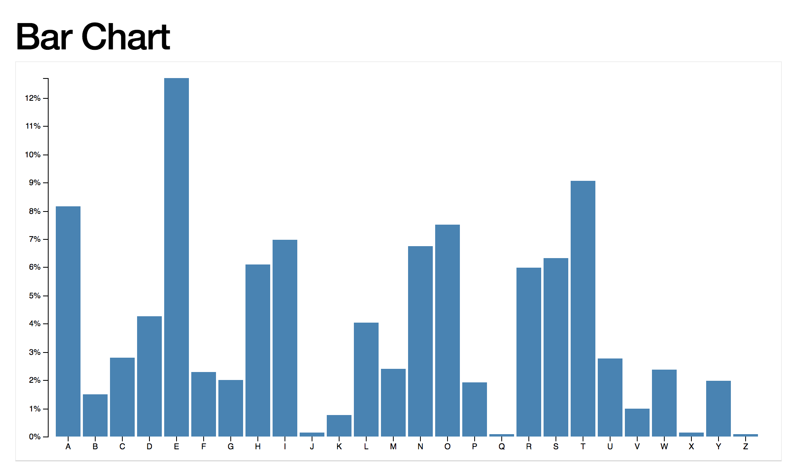
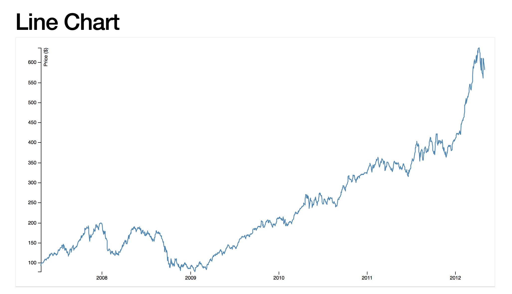

Data Visualization Workshop
Sections:
- What is Data Visualization
- Types of Visual Diagrams
- D3 API Docs
- List of D3 Modules
- Selections, Data, and Demo
- Enter and Append
- SVG
- Scales and Axis
- First Challenge
- Shapes
- Second Challenge
- Enter and Update
- Exit and Merge
- Transitions
- Third Challenge
- Force Layout
- D3 and Vuejs
- Data Visualization Best Practices
- General Data Visualization Resources
- Data Visualization Experts and Companies
- GitBook Link
What is Data Visualization
- Data visualization is the presentation of data in a pictorial or graphical format.
- It enables decision makers to see analytics presented visually
- Decision makers can then grasp difficult concepts or identify new patterns.
- With interactive visualization, you can take concepts further and teach concepts better.
- You can drill down into charts and graphs for more detail,
- and interactively change what data you see and how it’s processed.
Types of Visual Diagrams
A diagram is a symbolic representation of information according to some visualization technique.
Bar Charts
- A bar chart or bar graph is a chart or graph that presents categorical data with rectangular bars with heights or lengths proportional to the values that they represent.
- The bars can be plotted vertically or horizontally.
- A vertical bar chart is sometimes called a line graph.

Line Charts
- A line chart or line graph is a type of chart which displays information as a series of data points called 'markers' connected by straight line segments.
- It is a basic type of chart common in many fields.
- It is similar to a scatter plot except that the measurement points are ordered (typically by their x-axis value) and joined with straight line segments.
- A line chart is often used to visualize a trend in data over intervals of time – a time series – thus the line is often drawn chronologically.

Scatter Plots
- A scatter plot (also called a scatter graph, scatter chart, scattergram, or scatter diagram) is a type of plot or mathematical diagram using Cartesian coordinates to display values for typically two variables for a set of data.
- If the points are color-coded, one additional variable can be displayed.
- The data is displayed as a collection of points, each having the value of one variable determining the position on the horizontal axis and the value of the other variable determining the position on the vertical axis

D3 API Docs
D3 4.0 is a collection of modules that are designed to work together
- You can use the modules independently, or you can use them together as part of the default build.
- The source and documentation for each module is available in its repository.
Follow the links below to learn more:
- Introduction
- API Reference
- Release Notes
- Gallery
- Examples
- Tutorials
- Plugins
- d3.js on Stack Overflow
- d3-js Google Group
- d3-js Slack Channel (Invite)
- d3-js Gitter Channel
- d3-js IRC Channel => #d3.js on irc.freenode.net
List of D3 Modules
Data space
query
- d3-request
- d3-queue
generation
- d3-random
parsing
- d3-dsv
- d3-time
formatting
- d3-time-format
- d3-format
manipulation
- d3-array
- d3-collection
Graphic space
data transform
- d3-scale
- d3-geo-projection
geometry computation
- d3-voronoi
- d3-hull
- d3-quadtree
- d3-interpolate
- d3-geo
dynamic geometry computation
- d3-transition
- d3-timer
- d3-ease
visual variables mapping
- d3-hierarchy
- d3-sankey
- d3-chord
- d3-hexbin
- d3-force
generation
- d3-shape
- d3-path
- d3-polygon
converter
- d3-color
View space
visual variables mapping (selection, data-binding, attributes)
- d3-selection
- d3-selection-multi
high level set of visual variables mapping (component)
- d3-axis
Interaction space
internal events
- d3-dispatch
user events and geometry computation
- d3-zoom
- d3-brush
- d3-drag
Data Visualization Best Practices
There is a wonderful illustration in this Tableau White Paper on Data Visualization Best Practices
General Data Visualization Resources
- Dashing D3js
- Visualizing Data - a fantastic blog about data visualization.
- Flowing Data - another data visualization blog.
- Information Aesthetics - Another good blog.
- Shirley Wu - Excellent blog on Data Visualization.
Data Visualization Experts and Companies
- Jer Thorp - Data artist.
- Nicolas Feltron - Data artist.
- Stamen - Data visualization company, excellent blog, heavy focus on maps.
- Fathom - Another interesting data visualization company.